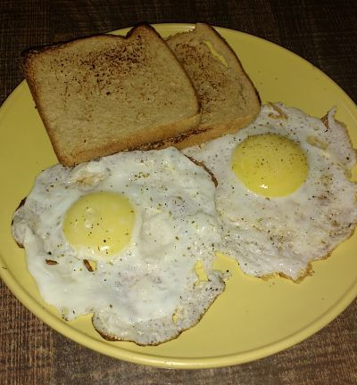

Half Fried Egg

Description
A half fried egg, also known as a "sunny side up" egg, is a simple yet delicious breakfast dish where the egg is cooked on one side until the white is set, leaving the yolk runny. It's a great addition to toast, rice, or any meal!
Ingredients
- 1 egg
- 1 tablespoon cooking oil or butter
- Salt to taste
Steps
- Heat the oil or butter in a frying pan over medium heat.
- Crack the egg into the pan and cook until the white is set, but the yolk remains runny.
- Sprinkle with salt and serve immediately.